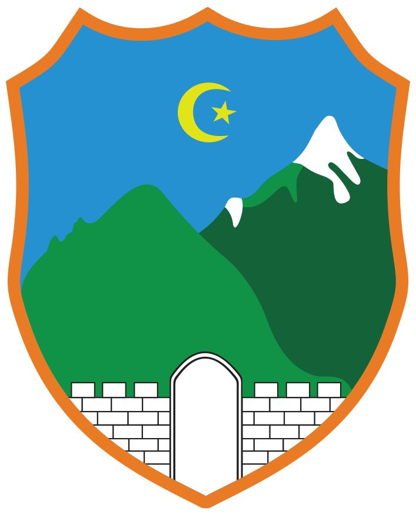

|
|
"Let your youth be a guide to positive change. Don't be afraid of challenges; Every step you take towards your goals, no matter how small, makes a difference. Be brave, be persistent and always follow your heart. " |  |
The first youth association in the municipality of Hadžići
In July 2023, several young enthusiasts gathered at the Hadžići Sports Center, determined to initiate changes in their local community. Their vision was to create a space where young people could express their ideas, work on projects to enhance the community, and inspire others by their example. Thus, the Youth Association "STARt" was born, the first youth association in the municipality of Hadžići. The beginning was not easy. The youth faced challenges and obstacles, but their passion and determination were stronger than anything else. Soon, they caught the attention of other young people in the city who wanted to be part of something bigger, something that would enable them to actively participate in creating a better future. The "STARt" Association became the hub of activities for the youth of Hadžići. They organized volunteer actions, workshops, cultural events, and educational programs. Their work was not only aimed at improving the local community but also had a broader social impact. Today, the "STARt" Association continues its mission of community improvement and encouraging young people to be active citizens. Their story reminds us that with small steps and big dreams, we can achieve significant changes in the world around us.